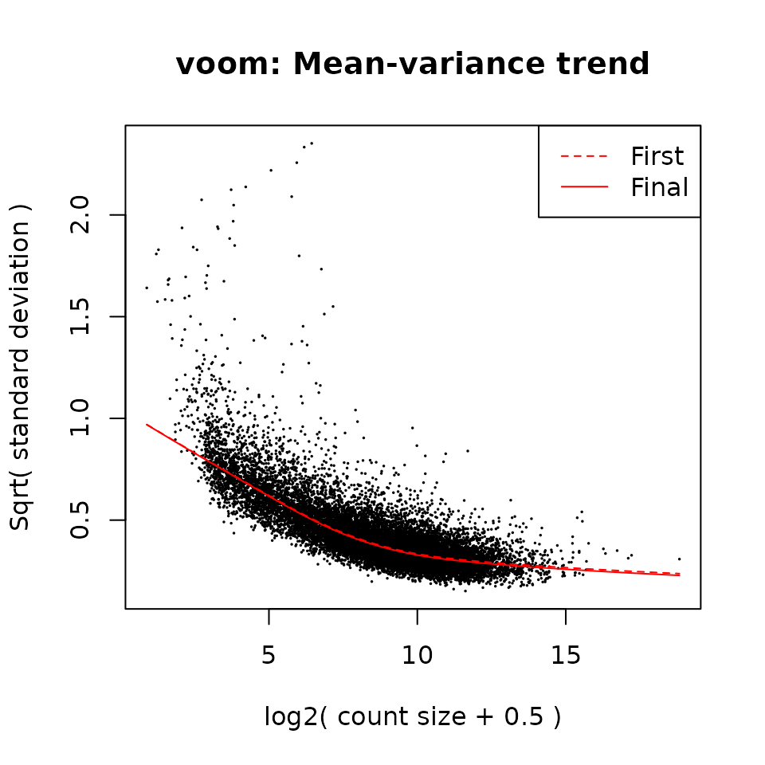

Zhu et al: Effects of SARM1 deficiency on gene expression
sarm1.Rmd
library(DESeq2)
library(edgeR)
library(rnaseqExamples)
library(statmod) # required for robust estimates using eBayes()In 2019, Zhu et al examined gene expression differences between SARM1 deficient and wildtype mouse brains. The authors reported that only a very small number of genes was significantly differentially expressed between the two genotypes in this model, including the Sarm1 and its neighboring gene, Xaf1.
Note: In 2020, Uccellini et al demonstrated that differential Xaf1 expression is not dependent on the presence of Sarm1, but was actually an artifact due to passenger mutations present in the specific Sarm1 knock-out mouse model used by Zhu et al.
A DESeqDataset object with raw counts, sample and gene annotations from the original study by Zhu et al is available in the sarm1 dataset included in this R package.
The raw RNA-seq data from this study is available from the Short Read Archive, accession SRP178253 Reads were aligned to the mouse reference genome (version GRCm38_p6, Gencode release release_M17) with the STAR aligner (version 2.7.1a) and gene-level abundances were inferred from the BAM files using salmon (version 0.13.1).
data("sarm1")
dds <- sarm1Differential expression analysis with DESeq2
# filtering, just to speed up computations
keep <- rowSums(counts(dds) >= 10) >= min(table(dds$group))
dds <- dds[which(keep & rowData(dds)$gene_type == "protein_coding"), ]
dds <- DESeq(dds)
#> estimating size factors
#> estimating dispersions
#> gene-wise dispersion estimates
#> mean-dispersion relationship
#> final dispersion estimates
#> fitting model and testing
res <- results(dds, contrast = c("group", "KO_ctrl", "WT_ctrl"))
data.frame(
symbol = rowData(dds)[row.names(res[res$padj < 0.01, ]), c("symbol")],
res[res$padj < 0.01, ]
)
#> symbol baseMean log2FoldChange lfcSE stat
#> ENSMUSG00000040483 Xaf1 268.8498 1.144277 0.2224215 5.144634
#> ENSMUSG00000050132 Sarm1 331.8143 -2.881850 0.1110706 -25.946104
#> pvalue padj
#> ENSMUSG00000040483 2.680435e-07 2.015955e-03
#> ENSMUSG00000050132 2.012012e-148 3.026468e-144
DESeq2::plotMA(res)
plotCounts(dds, gene = which.min(res$padj), intgroup="group",
main = rowData(dds)[which.min(res$padj), "symbol"])
Limma / Voom analysis
Alternatively, we can perform the same analysis using the limma/voom framework, specifically the voomLmFit() function from the edgeR Bioconductor package.
design <- model.matrix(~ 0 + group, data = colData(dds))
colnames(design) <- sub("group", "", colnames(design))
keep <- filterByExpr(dds, design = design)
fit <- voomLmFit(
counts = dds[keep & rowData(dds)$gene_type == "protein_coding", ],
design = design,
plot = TRUE,
sample.weights = TRUE)
#> First sample weights (min/max) 0.468046/1.424113
#> Final sample weights (min/max) 0.4677988/1.4225225
contrasts = makeContrasts(
SARM1_untreated = "KO_ctrl - WT_ctrl",
prion_wt = "WT_prion - WT_ctrl",
levels = design
)
fit2 <- contrasts.fit(fit, contrasts = contrasts)
fit2 <- eBayes(fit2, robust = TRUE)
topTable(fit2, coef = "SARM1_untreated",
p.value = 0.05)[, c("symbol", "logFC", "P.Value", "adj.P.Val")]
#> symbol logFC P.Value adj.P.Val
#> ENSMUSG00000050132 Sarm1 -2.917003 9.224524e-17 1.374546e-12
sessionInfo()
#> R version 4.2.1 (2022-06-23)
#> Platform: x86_64-pc-linux-gnu (64-bit)
#> Running under: Ubuntu 20.04.5 LTS
#>
#> Matrix products: default
#> BLAS: /usr/lib/x86_64-linux-gnu/blas/libblas.so.3.9.0
#> LAPACK: /usr/lib/x86_64-linux-gnu/lapack/liblapack.so.3.9.0
#>
#> locale:
#> [1] LC_CTYPE=C.UTF-8 LC_NUMERIC=C LC_TIME=C.UTF-8
#> [4] LC_COLLATE=C.UTF-8 LC_MONETARY=C.UTF-8 LC_MESSAGES=C.UTF-8
#> [7] LC_PAPER=C.UTF-8 LC_NAME=C LC_ADDRESS=C
#> [10] LC_TELEPHONE=C LC_MEASUREMENT=C.UTF-8 LC_IDENTIFICATION=C
#>
#> attached base packages:
#> [1] stats4 stats graphics grDevices datasets utils methods
#> [8] base
#>
#> other attached packages:
#> [1] statmod_1.4.37 rnaseqExamples_0.0.0.9000
#> [3] edgeR_3.38.4 limma_3.52.4
#> [5] DESeq2_1.36.0 SummarizedExperiment_1.26.1
#> [7] Biobase_2.56.0 MatrixGenerics_1.8.1
#> [9] matrixStats_0.62.0 GenomicRanges_1.48.0
#> [11] GenomeInfoDb_1.32.4 IRanges_2.30.1
#> [13] S4Vectors_0.34.0 BiocGenerics_0.42.0
#>
#> loaded via a namespace (and not attached):
#> [1] httr_1.4.4 sass_0.4.2 bit64_4.0.5
#> [4] jsonlite_1.8.2 splines_4.2.1 bslib_0.4.0
#> [7] highr_0.9 blob_1.2.3 renv_0.16.0
#> [10] GenomeInfoDbData_1.2.8 yaml_2.3.6 pillar_1.8.1
#> [13] RSQLite_2.2.18 lattice_0.20-45 glue_1.6.2
#> [16] digest_0.6.30 RColorBrewer_1.1-3 XVector_0.36.0
#> [19] colorspace_2.0-3 htmltools_0.5.3 Matrix_1.4-1
#> [22] pkgconfig_2.0.3 XML_3.99-0.11 genefilter_1.78.0
#> [25] zlibbioc_1.42.0 purrr_0.3.5 xtable_1.8-4
#> [28] scales_1.2.1 BiocParallel_1.30.4 tibble_3.1.8
#> [31] annotate_1.74.0 KEGGREST_1.36.3 ggplot2_3.3.6
#> [34] cachem_1.0.6 cli_3.4.1 survival_3.3-1
#> [37] magrittr_2.0.3 crayon_1.5.2 memoise_2.0.1
#> [40] evaluate_0.17 fansi_1.0.3 fs_1.5.2
#> [43] textshaping_0.3.6 tools_4.2.1 lifecycle_1.0.3
#> [46] stringr_1.4.1 locfit_1.5-9.6 munsell_0.5.0
#> [49] DelayedArray_0.22.0 AnnotationDbi_1.58.0 Biostrings_2.64.1
#> [52] compiler_4.2.1 pkgdown_2.0.6 jquerylib_0.1.4
#> [55] systemfonts_1.0.4 rlang_1.0.6 grid_4.2.1
#> [58] RCurl_1.98-1.9 bitops_1.0-7 rmarkdown_2.17
#> [61] gtable_0.3.1 codetools_0.2-18 DBI_1.1.3
#> [64] R6_2.5.1 knitr_1.40 utf8_1.2.2
#> [67] fastmap_1.1.0 bit_4.0.4 rprojroot_2.0.3
#> [70] ragg_1.2.3 desc_1.4.2 stringi_1.7.8
#> [73] parallel_4.2.1 Rcpp_1.0.9 vctrs_0.4.2
#> [76] geneplotter_1.74.0 png_0.1-7 xfun_0.34